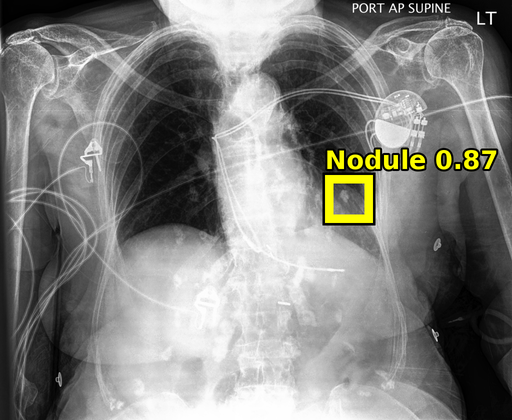
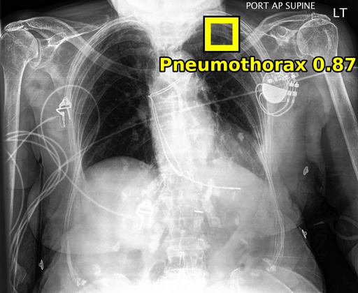
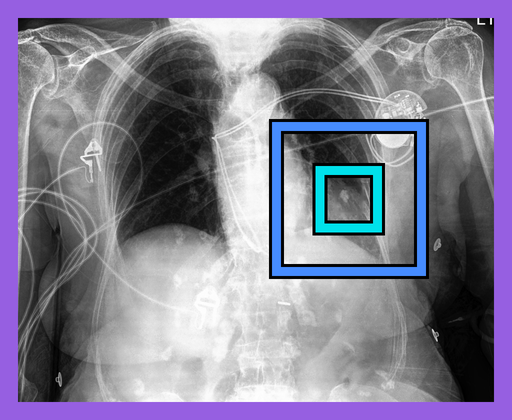
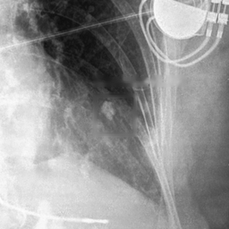
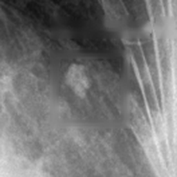
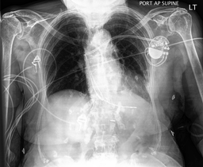
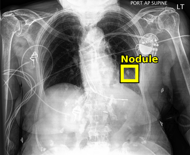
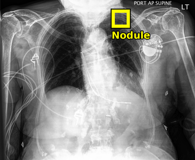
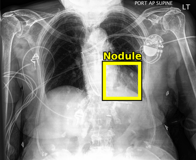

Keep the marks that are right. Erase the ones that are not.
Radiographs reach medical VLMs with CAD boxes, labels and arrows burned into the pixels, and the VLMs simply believe them. GLANCE erases each mark, checks the claim against the anatomy at its location, and shows the VLM the mark only if it is supported.



One CheXlocalize radiograph; marks are drawn thicker than in the benchmark for visibility.
Medical vision-language models (VLMs) increasingly receive images with burned-in annotations, yet cannot reliably distinguish correct from misleading marks. We show that misleading labels can override the answers of six VLMs, while removing all marks discards useful information. We introduce GLANCE, a claim-conditioned verifier that erases annotations before assessing anatomical support using local, close-up, and global image views. Counterfactual training encourages verification of each claim at its marked location rather than generic disease detection. Across four evaluation sets (including two development sets), GLANCE preserves much of the benefit of correct annotations while limiting harm. Site-specific thresholds enable certified or label-free deployment; certification bounds answer flips under sampled marks, not diagnostic error.
When a radiograph arrives with a mark that says “nodule here”, should the VLM trust it, ignore it, or check it? Trusting loses to every wrong CAD box; ignoring throws away every right one. GLANCE checks.
The certificate bounds answer flips relative to the clean-image answer under our sampled marks and i.i.d. site images. It does not certify diagnostic error, realistic-CAD or extraction failures, or the label-free rule.
A misleading label on normal lung drops the specificity of Qwen2.5-VL-7B from 84% to 0%. Across six VLMs, misleading marks cost up to 95 accuracy points; the label text alone reproduces the full effect.
Evidence → Table 1Warning, artifact-aware and describe-first prompts leave 33–98 points of harm. Removing every mark is safe but gives up all of the benefit of correct marks.
Evidence → Table 2One network reaches an AUC of 0.921 when it verifies a claim at the marked location and 0.635 when it searches the lung for the same finding.
Evidence → MethodAgainst a matched local-only verifier, the close-up and whole-film views add 0.036–0.061 AUC and 13–18 points of benefit kept for both Qwen models, all significant.
Evidence → Tables 3, 4With a label-free threshold from unlabelled images, GLANCE keeps 77% / 66% of the benefit (Qwen-7B / MedGemma-4B) at 0–2 points of harm, against 37% / 22% for a chest X-ray classifier.
Evidence → Table 6Erase, score and re-query keeps 63–70% (Qwen-7B) and 64–80% (MedGemma-4B) of the benefit on the two held-out splits. Boxes are recovered from pixels for 99.3% of marks, arrows for 92.2%.
Evidence → Table 8Click a figure to open it full screen; use the arrow keys to move between them and Esc to close.
A radiograph and a yes/no question about finding . A mark has a location (box, arrow tip or text position) and a claimed finding , and reaches the VLM only through the pixels of . A defense decides which image the VLM sees: the marked one or the erased one .
Radiographs are greyscale and overlays are coloured, so the overlay is found from the channel spread and removed by fast-marching inpainting. The verifier reads anatomy only.
A local crop, a lesion close-up and the whole film pass through one shared DenseNet-121 initialised from torchxrayvision.
A learned claim embedding modulates the lesion views by FiLM, and an MLP over all features, the claim and the box position outputs a support score.
After per-finding Platt calibration, the VLM sees the marked image only if the score clears the threshold and the claim matches the question.
With the questions whose answer is yes (each with a correct mark ) and those whose answer is no (each with a misleading mark on lesion-free lung), and the indicator of a correct answer:
Trusting every mark maximises both; removing every mark sets both near zero. We want the defense that keeps the most benefit under a harm budget , and we report benefit kept, , with and the irrelevant-mark harm , at points.
A detector estimates over the whole image, which is the diagnostic problem itself. A verifier is conditioned on a location and a claim, a much narrower question:



The local crop captures the lesion with its surroundings, the close-up resolves small lesions such as nodules, and the whole radiograph provides side, lung zone, devices and projection. Each view is encoded by a shared DenseNet-121, the claim embedding modulates the lesion views by FiLM, and the box position is embedded by a small layer :
A verifier trained on correct versus random marks can succeed by detecting “something abnormal”. GLANCE trains on groups whose negatives differ from the positive in exactly one factor, location or claim, so separating them requires checking this claim at this place.



Training details. About 3,000 VinDr-CXR images (disjoint from the 285 test images) and the NIH-A patients; sampling balanced over claims, NIH groups up-weighted five-fold. 8 epochs of AdamW (learning rate 10−3 for the head, 2·10−5 for the backbone), 16 counterfactual groups per batch, best epoch chosen on the VinDr-CXR validation split and NIH-B; GLANCE and the matched local-only model are reported over three seeds.
To examine the gap between rendered-mark metadata and pixel-only operation, coloured box and arrow geometry and label claims are recovered from the marked image by overlay segmentation and Qwen2.5-VL-7B text recognition. Extracted text is mapped to the supported finding vocabulary; unrecognised or missing marks are rejected rather than assigned an oracle claim. On single-mark CheXlocalize-Test, extraction jointly recovered usable geometry and claim for 739/744 box marks (99.3%) and 686/744 arrow marks (92.2%). The main benchmark's controlled comparisons use renderer-known unless designated as pixel-extracted.
Six VLMs (Qwen2.5-VL-7B/32B, InternVL3-8B, MedGemma-4B/27B, Lingshu-7B) served with vLLM at temperature 0, asked “Is there {finding} present? Answer with only one word: yes or no.” Marks come from radiologist annotations on VinDr-CXR, NIH ChestX-ray14 and CheXlocalize, in three visual styles; CAD-style boxes (box with label and score) are the main setting.
| VLM | CheXlocalize-Test | CheXlocalize-Val | ||
|---|---|---|---|---|
| Benefit | Harm | Benefit | Harm | |
| General VLMs | ||||
| Qwen2.5-VL-7B | +75.0 | +92.3 | +78.2 | +94.5 |
| Qwen2.5-VL-32B | +39.5 | +66.1 | +45.5 | +59.1 |
| InternVL3-8B | +16.5 | +60.5 | +19.1 | +67.3 |
| Medical VLMs | ||||
| MedGemma-4B | +16.9 | +44.0 | +29.1 | +37.3 |
| MedGemma-27B | +0.0 | +12.5 | −2.7 | +12.7 |
| Lingshu-7B | +4.8 | +35.5 | +11.8 | +45.5 |
Table 1 · Annotations dominate VLM answers (CAD-style marks; benefit / harm in accuracy points). Label-only marks reproduce the full effect (Qwen2.5-VL-7B on VinDr-CXR: +79.6 / +83.9), unlabelled boxes have a small effect (+18.9 / +13.3), and a correct mark of a different finding leaves answers unchanged (|Hirr| ≤ 5).
| Defense | Test | Val | ||
|---|---|---|---|---|
| Benefit | Harm | Benefit | Harm | |
| Qwen2.5-VL-7B | ||||
| Warning prompt | +76.2 | +93.5 | +79.1 | +94.5 |
| Artifact-aware prompt | +81.1 | +98.4 | +84.5 | +98.2 |
| Describe-then-answer | +56.0 | +37.5 | +62.7 | +32.7 |
| QuISE | +11.3 | +7.3 | +16.3 | +3.6 |
| Remove all marks | −0.4 | −0.4 | +0.9 | +0.0 |
| MedGemma-4B | ||||
| Warning prompt | +16.1 | +41.1 | +30.9 | +39.1 |
| Artifact-aware prompt | +17.3 | +39.5 | +31.8 | +38.2 |
| Describe-then-answer | +24.5 | +51.2 | +37.3 | +41.8 |
| QuISE | −6.4 | −2.0 | −5.4 | −0.9 |
| Remove all marks | +0.4 | +0.0 | −1.8 | +0.9 |
Table 2 · Prompting and removal defenses (benefit / harm in accuracy points).
Prompt-level defenses leave harm high. QuISE and mark removal reduce harm only by discarding the benefit, so none of them keeps what correct marks provide. Removal uses the real inpainting pipeline.
That leaves the third option: decide, mark by mark, whether to trust it.
Each defense scores every mark and gates it with a site threshold selected on half of the patients under a 5-point harm budget; values are the benefit kept in % of the undefended benefit, over 200 patient-level splits. AUC separates correct from misleading marks and is identical for all VLMs.
| Defense | CheXlocalize-Test (248 images) | CheXlocalize-Val (110 images) | ||||||||||
|---|---|---|---|---|---|---|---|---|---|---|---|---|
| AUC | Qwen 7B | Qwen 32B | InternVL3 | MedGemma | Lingshu | AUC | Qwen 7B | Qwen 32B | InternVL3 | MedGemma | Lingshu | |
| VLM self-check | 0.779 | 17 | 23 | 21 | 8 | 42 | 0.723 | 10 | 14 | 8 | 1 | 34 |
| BiomedCLIP zero-shot | 0.768 | 26 | 29 | 29 | 36 | 33 | 0.668 | 13 | 12 | 10 | 29 | 16 |
| Detect-then-check (whole image) | 0.825 | 34 | 47 | 52 | 40 | 53 | 0.808 | 32 | 46 | 23 | 42 | 37 |
| CXR classifier on region | 0.919 | 76 | 76 | 63 | 71 | 67 | 0.923 | 70 | 70 | 52 | 69 | 79 |
| Local verifier (1 site) | 0.811 | 28 | 35 | 34 | 63 | 45 | 0.815 | 27 | 25 | 32 | 44 | 57 |
| Local verifier (2 sites) | 0.911 | 52 | 53 | 44 | 74 | 65 | 0.870 | 48 | 37 | 41 | 59 | 71 |
| Matched local-only | 0.923 | 59 | 56 | 57 | 77 | 59 | 0.870 | 48 | 39 | 48 | 57 | 69 |
| GLANCE pre-registered | 0.956 | 74 | 77 | 73 | 86 | 94 | 0.923 | 59 | 54 | 70 | 69 | 83 |
| GLANCE final | 0.959±.009 | 73±6 | 73±2 | 69±3 | 82±3 | 82±5 | 0.931±.016 | 63±5 | 57±6 | 65±3 | 69±5 | 88±6 |
Table 3 · Verification-based defenses on the two CheXlocalize evaluation splits (CAD-style marks). Self-check uses MedGemma-4B as checker; the CXR classifier is torchxrayvision. GLANCE final: mean±SD over seeds; matched local-only: mean over seeds. MedGemma-27B is omitted because correct marks provide it no benefit; Lingshu-7B's benefit is small (4.8 and 11.8 points), so its percentages are less precise. Best result per column in bold.
| GLANCE minus | ΔAUC | Δ benefit kept (points) | ||||
|---|---|---|---|---|---|---|
| Qwen 7B | Qwen 32B | InternVL3 | MedGemma | Lingshu | ||
| CheXlocalize-Test | ||||||
| Local-only | +.036† | +13† | +17† | +12 | +5 | +22 |
| Classifier | +.040† | −3 | −3 | +5 | +11 | +15 |
| Local-2 | +.048† | +21† | +20† | +25† | +8 | +16 |
| Local-1 | +.149† | +45† | +38† | +35† | +19† | +36† |
| CheXlocalize-Val | ||||||
| Local-only | +.061† | +15† | +18† | +17 | +12 | +20 |
| Classifier | +.008 | −7 | −13 | +13 | 0 | +10 |
| Local-2 | +.061† | +15† | +20 | +24† | +11 | +18 |
| Local-1 | +.116† | +36† | +32† | +33† | +25† | +32† |
Table 4 · Paired comparisons. Final GLANCE (mean over seeds) minus each method on identical marks and splits. Local-only: matched local-only GLANCE; Classifier: CXR classifier on region; Local-1/2: local verifier trained on 1/2 sites. † 95% patient-bootstrap interval excludes zero.
With identical code, data and training budget, the close-up and whole-radiograph views raise the AUC by 0.036–0.061 and the benefit kept for both Qwen models by 13–18 points (all significant), with same-sign gains for the other VLMs. GLANCE also significantly outperforms both local verifiers.
Verifiers inherit the cross-site weakness of medical imaging models: a single-crop verifier trained on VinDr-CXR drops from an AUC of 0.92 to 0.64 on NIH ChestX-ray14, mostly on portable supine radiographs with tubes and wires.
| Evaluation set | Role | AUC | Qwen-7B kept | MedG-4B kept | ||||||
|---|---|---|---|---|---|---|---|---|---|---|
| C | L | G | C | L | G | C | L | G | ||
| VinDr-CXR | development | .599 | .870 | .914† | 22 | 59 | 66† | 15 | 58 | 69† |
| NIH-B | development | .676 | .811 | .867† | 28 | 44 | 55† | 37 | 50 | 66† |
| CheXlocalize-Test | pre-registered; informed model selection | .919 | .923 | .959 | 76 | 59 | 73 | 71 | 77 | 82 |
| CheXlocalize-Val | untouched, evaluated once | .923 | .870 | .931 | 70 | 48 | 63 | 69 | 57 | 69 |
Table 5 · Four evaluation sets from three sources. AUC and benefit kept (%) at harm ≤ 5. C: CXR classifier on region; L: matched local-only; G: GLANCE final. † Paired GLANCE minus classifier is significant on AUC and both VLMs (95% interval excludes 0): ΔAUC +.315 (VinDr-CXR) and +.191 (NIH-B), Δkept +27 to +54 points. On CheXlocalize the differences are +.040† / +.008 AUC and −7 to +11 points. The NIH-B set also served for epoch selection of G.
| Negative | Classifier | GLANCE |
|---|---|---|
| Lesion-free lung, same image | 0.840 (0.820) | 0.951 (0.933)† |
| Same claim, other real lesion | 0.525 (0.578) | 0.798 (0.757)† |
| Wrong claim, true lesion | 0.833 (0.834) | 0.819 (0.802) |
| “No Finding” radiograph | 0.952 (0.946) | 0.938 (0.897) |
Table 6a · AUC of the correct mark against each type of negative, CheXlocalize-Test (Val in brackets). † Paired difference significant on both splits.
A region classifier estimates whether a region resembles the finding, so a claim moved to another real lesion still scores high (AUC 0.53–0.58). GLANCE's counterfactual training targets exactly this case (0.76–0.80).
The classifier is slightly better on wrong claims at the true lesion and on “No Finding” radiographs, which whole-image evidence resolves. The decisive difference is the operating point, shown next.
A fixed source threshold transfers poorly, whereas verifier rankings transfer well, so a small amount of site data suffices to set the operating point.
For each threshold on a fixed grid, count the answers the gated defense flips from right to wrong with misleading and irrelevant marks. An exact one-sided Clopper–Pearson upper bound, tested from strict to permissive as a fixed-sequence procedure, certifies thresholds whose flip rates are at most :
If the calibration images are i.i.d. draws from the site, then with probability at least every accepted threshold satisfies both flip-rate bounds simultaneously. Even with zero flips, , that is n ≥ 45 for and . Below that size the rule rejects every mark, which is safe.
A random claim on a random lung patch of an unlabelled site image is almost always unsupported, because lesions cover a small fraction of the lung. Scoring such synthetic wrong marks gives the site's own wrong-mark score distribution:
The -quantile rejects a fraction of wrong marks at this site; a per-claim variant uses one quantile per finding. It carries no guarantee, since random wrong marks may be easier to reject than clinically plausible errors, so it is validated empirically.
| Operating point | Classifier kept | Classifier harm | GLANCE kept | GLANCE harm | ||||
|---|---|---|---|---|---|---|---|---|
| Qwen | MedG | Qwen | MedG | Qwen | MedG | Qwen | MedG | |
| Fixed threshold 0.5 | 99 | 100 | 87 | 41 | 35 | 62 | 0 | 0 |
| Label-free, per-claim | 37 | 22 | 1.8 | 0.1 | 77 | 66 | 2.3 | 0.0 |
| Label-free, global | 44 | 33 | 0.8 | 0.4 | 51 | 69 | 1.4 | 0.0 |
| Certified, 45 images | 51 | 51 | 2.1 | 1.9 | 51 | 78 | 1.9 | 2.0 |
Table 6b · Benefit kept (%) and harm (points) for Qwen2.5-VL-7B / MedGemma-4B on CheXlocalize-Test at operating points available to a new hospital (single run). Per-claim and global label-free thresholds use q = 0.95; the certified rule uses 45 labelled images.
Sample size and safety. With the empirical rule on ten labelled images GLANCE already keeps 73% (Qwen2.5-VL-7B) and 84% (MedGemma-4B), but harm then exceeds the budget in about half of the deployments. The certified rule's realised harm is 1–2 points, exceeding the budget in at most 10% of draws (δ = 0.1), with 46–57% and 77–81% of the benefit kept for n from 45 to 124. The label-free rule (8 random claims on each of about 120 unlabelled images, q = 0.95) is empirically the safest, without a guarantee: harm exceeds 5 points in 3% and 0% of deployments, against 54% and 42% for the labelled empirical rule.
| Variant | CheXlocalize-Test | NIH-B | ||||
|---|---|---|---|---|---|---|
| AUC | Qwen | MedG | AUC | Qwen | MedG | |
| GLANCE final | .959 | 73 | 82 | .867 | 55 | 66 |
| − close-up, whole | .923 | 59 | 77 | .811 | 44 | 50 |
| − box position pb | .955 | 73 | 81 | .863 | 54 | 58 |
| − FiLM | .956 | 78 | 80 | .908 | 61 | 69 |
| + mirror, rank loss | .956 | 74 | 86 | .874 | 58 | 66 |
Table 7 · Ablations. AUC and benefit kept (%) at harm ≤ 5 for Qwen2.5-VL-7B and MedGemma-4B. Each row changes one component of the final model (single run); “− close-up, whole” is the matched local-only model and “+ mirror, rank loss” is the pre-registered model (mean over seeds for these and the final model).
The final model was obtained by simplifying the pre-registered one after ablations on CheXlocalize-Test. CheXlocalize-Test therefore informed model selection; CheXlocalize-Val informed no design decision and was evaluated once, afterwards.
Earlier results assume ideal removal of rejected marks. The full pipeline detects marks by colour alone, erases them by inpainting, scores the inpainted image, and queries every VLM again. Erasure itself is neutral: answers on inpainted and clean images agree for 96–100% of questions, and erasing every mark changes benefit and harm by at most 3 points.
| Verifier | CheXlocalize-Test | CheXlocalize-Val | ||
|---|---|---|---|---|
| Qwen | MedG | Qwen | MedG | |
| Local verifier (1 site) | 28 / 15 | 63 / 30 | 26 / 15 | 47 / 17 |
| Local verifier (2 sites) | 52 / 39 | 72 / 40 | 48 / 31 | 60 / 21 |
| Matched local-only | 53 / 35 | 74 / 38 | 41 / 31 | 47 / 19 |
| CXR classifier on region | 76 / 56 | 75 / 40 | 68 / 49 | 67 / 24 |
| GLANCE pre-registered | 70 / 44 | 87 / 48 | 55 / 39 | 61 / 22 |
| GLANCE final | 70 / 56 | 80 / 48 | 63 / 43 | 64 / 25 |
Table 8 · End-to-end pipeline (CAD-style marks). Benefit kept (%) at harm ≤ 5 with the site-empirical / certified threshold (200 splits). GLANCE final averages three seeds; matched local-only is a single run. Best value per column in bold.
On the same 248 CheXlocalize-Test images, pixel-extracted geometry and text replace oracle inputs, using cached VLM answers and three frozen GLANCE checkpoints. All 744 box and 744 arrow records match the oracle cohorts. Mean benefit / harm in accuracy points across VLM configurations and seeds:
| Mark style | Pixel-extracted | Oracle (b, c) |
|---|---|---|
| Box with label and score | 24.37 / 0.27 | 24.69 / 0.22 |
| Arrow with label | 18.68 / 0.85 | 24.64 / −0.04 |
These pooled descriptive means lack patient-level confidence intervals; arrow extraction reduces benefit. The evaluation covers single rendered marks, not multiple-mark association or real CAD outputs. Separately, 5,952 Telea inpainting variants (different masks and dilation) were scored for coverage, overlay recall, mark-region MAE and PSNR; these diagnostics do not establish downstream VLM sensitivity.
Marks are rendered from radiologist annotations, and the harmful marks are sampled (lesion-free lung, wrong label, other lesion). Harm control may not transfer to realistic CAD false positives; the paper claims verification of an extracted mark and claim, not an end-to-end CAD defense.
It bounds answer flips under sampled marks and i.i.d. site images. It does not cover diagnostic error or extraction failures, and the label-free rule has no guarantee.
Frontal chest radiographs, yes/no questions and single rendered marks. Multiple or overlapping marks, grayscale overlays, free-form text, unlabelled arrows, other modalities and open-ended responses remain untested, as does a placebo-erasure control for inpainting shortcuts.
NIH ChestX-ray14 boxes come from a single reader, and CheXlocalize has few Nodule/Mass and Pneumothorax cases. GLANCE and the classifier baseline share torchxrayvision weights pretrained with image-level labels that include NIH ChestX-ray14 and CheXpert. CheXlocalize-Test informed model selection; only CheXlocalize-Val was untouched.
All data are public and de-identified. Natural CAD outputs, multi-mark extraction, placebo-erasure controls and calibration under distribution shift warrant further study.
Anonymous during review; this entry will be updated after the decision.
@inproceedings{glance2027,
title = {{GLANCE}: Global--Local Annotation Consistency Estimation
for Robust Medical Vision-Language Models},
author = {Anonymous},
booktitle = {Under review at the IEEE/CVF Conference on Computer Vision
and Pattern Recognition (CVPR)},
year = {2027}
}